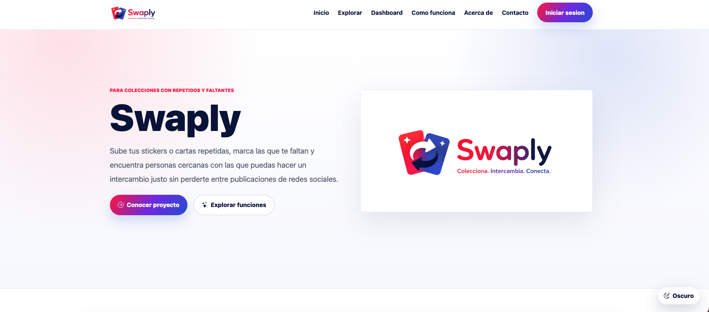
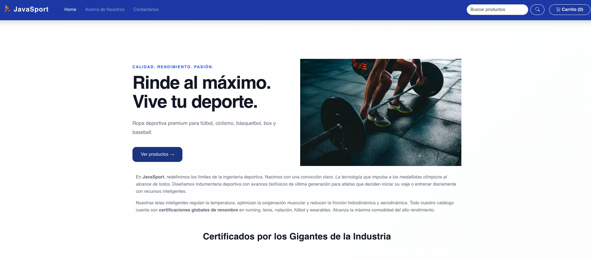
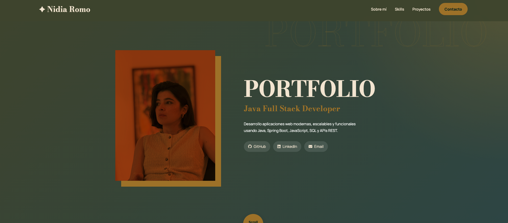

Frontend
Swaply
Red social para intercambio de coleccionables, cartas y artículos geek. Incluye login, feed, sidebar, secciones de usuario y diseño responsivo.

Landing Page
JavaSport
Landing page responsive para tienda deportiva. Proyecto colaborativo con secciones visuales, hero, productos y diseño adaptable.
